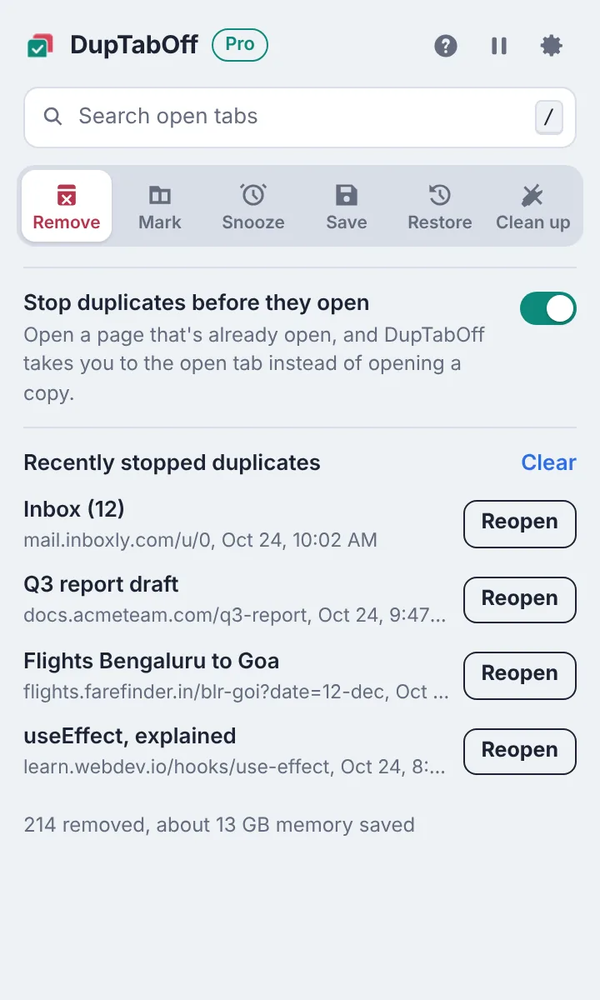
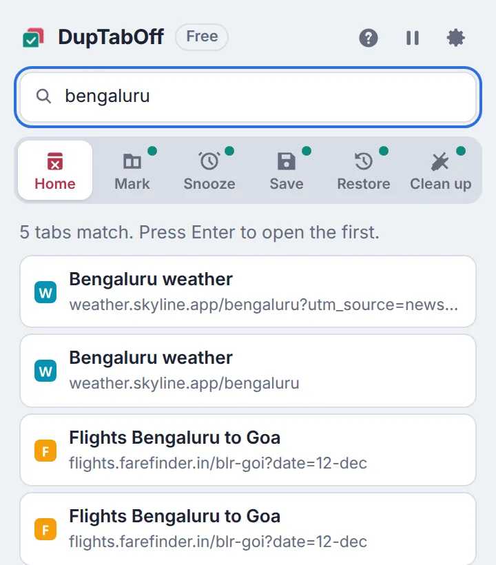
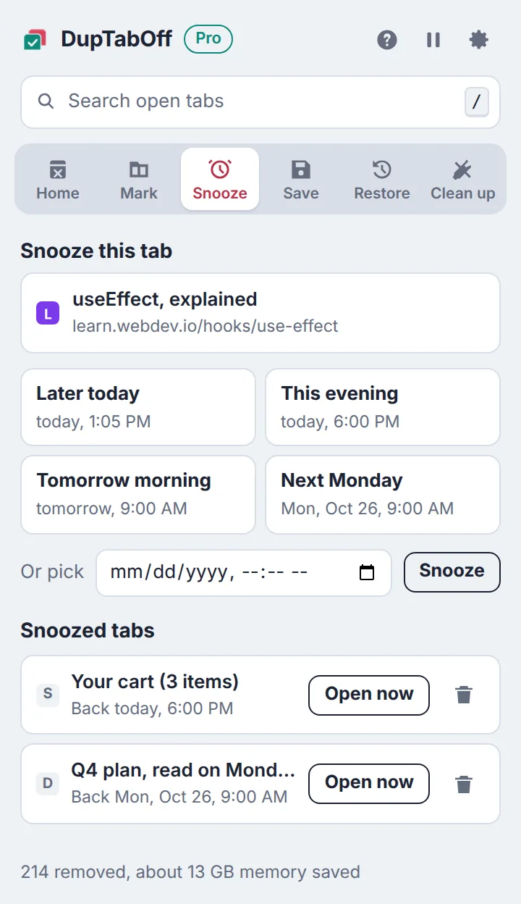
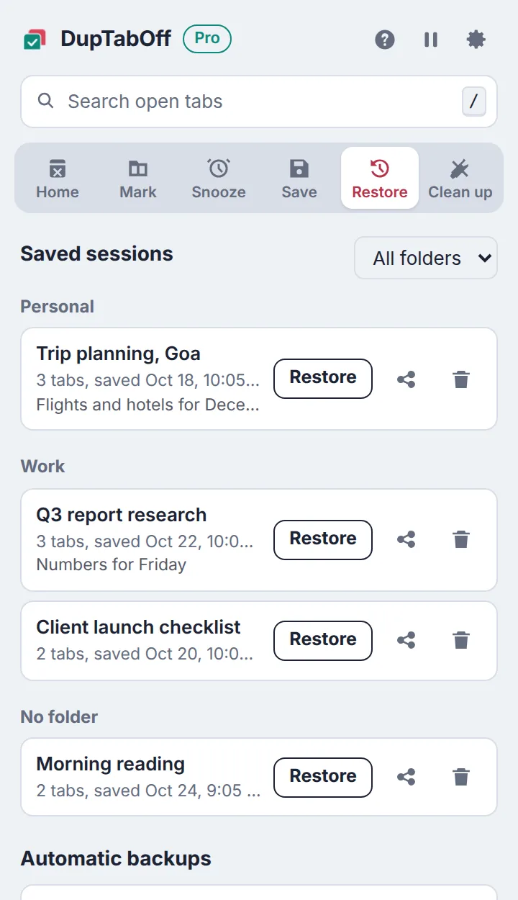

DupTabOff for Chrome
DupTabOff for Chrome
Same page open three times? Keep one.
DupTabOff finds every page you have open more than once, shows which copy stays, and removes the rest in one click. Pinned tabs, music and the tab you're reading are never touched.
Same page, open three times. DupTabOff closes the extra copies and keeps the one you need, without moving any other tab.
See which copy stays before anything closes
The number on the DupTabOff icon tells you how many duplicates are open. Open the popup and each duplicated page is listed, with the copy that stays and the copies that close.
- Treats http and https, www, trailing slashes and tracking codes as the same page
- Right-click any page and choose "Remove duplicates of this page"
- Undo brings back the tabs you just removed Pro

Stop duplicates before they open Pro
Click a link or bookmark to a page you already have open, and DupTabOff takes you to that tab instead of opening another copy. Links you open in the background close quietly, so you're never pulled away from what you're reading.
- Never touches sign-in windows, form results or tabs you duplicated on purpose
- Recently stopped pages are listed with a Reopen button

Find any tab in a second
Press / in the popup and start typing. Matching tabs from every window appear as you type, and Enter takes you straight there. Free for everyone.

Snooze a tab until you need it Pro
Close a tab now and have it come back by itself later today, this evening, tomorrow morning, next Monday or any time you pick. If Chrome is closed then, it comes back the next time you open it.

Never lose a set of tabs again Pro
Save your open tabs as a named session, file it in a folder, add a note, and reopen it in one click with pinned tabs and tab groups back in place. Automatic backups every 30 minutes protect you from crashes.
- Share a session as a simple page of links you can send to anyone
- Clean-up tools: close unused tabs, close a whole site, merge windows, sort by site

Private by design
DupTabOff reads your open tabs only inside your browser. It has no ads, no analytics and no account, and your tabs and sessions never leave your computer. Read the privacy policy.
Free to use. Lifetime Pro when you want more.
Try every Pro feature free for 7 days, with nothing to pay or cancel.
Free
$0
- Remove duplicates in the window you're in: your first 200 with no limit, then up to 10 per click
- Duplicate count on the icon, and right-click removal
- Search every open tab, copy all tab links
- Light and dark theme, larger text, keyboard use
Lifetime Pro
$4.99 paid once, no subscription
- Remove every duplicate across all windows at once
- Stop duplicates before they open
- Undo, colour marks and sleep duplicates
- Snooze, saved sessions with folders, notes and sharing
- Automatic backups and tab clean-up tools
- One key works on up to 5 browsers
Questions
Will it close my Gmail, Google Docs or other web apps?
Only real duplicates close. Apps like Gmail use the part of the address after # for different screens, so your inbox and an open email are not treated as copies. Pinned tabs and tabs playing sound are never closed.
Will it mix up the order of my tabs?
No. DupTabOff never moves a tab when removing duplicates; it only closes the extra copies. The copy you're looking at, a pinned copy, or a copy inside one of your tab groups is the one that stays.
What is the difference between Free and Lifetime Pro?
The free version removes duplicates in the window you're in: your first 200 with no limit, then up to 10 per click. Lifetime Pro checks every window at once, stops duplicates before they open, and adds Undo, colour marks, snooze, saved sessions and clean-up tools.
Is Lifetime Pro a subscription?
No. Lifetime Pro is $4.99, paid once, with no renewals. One license key works on up to 5 browsers. You can try every Pro feature free for 7 days first, with nothing to cancel.
Does DupTabOff collect my browsing data?
No. Your tabs are read only inside your browser and nothing about them is sent anywhere. There are no ads, no analytics and no account. The only time DupTabOff goes online is to check a Pro license key with Gumroad, the store that sells Pro.
Which browsers does it work in?
Chrome 88 or newer on Windows, Mac, Linux and ChromeOS, and Chromium browsers such as Edge, Brave, Opera and Vivaldi. Chrome on phones doesn't support extensions.
Can I get a refund?
Yes. If Pro doesn't work for you, email support@purplewonton.com within 14 days of buying and we'll refund you.
More answers on the support page.